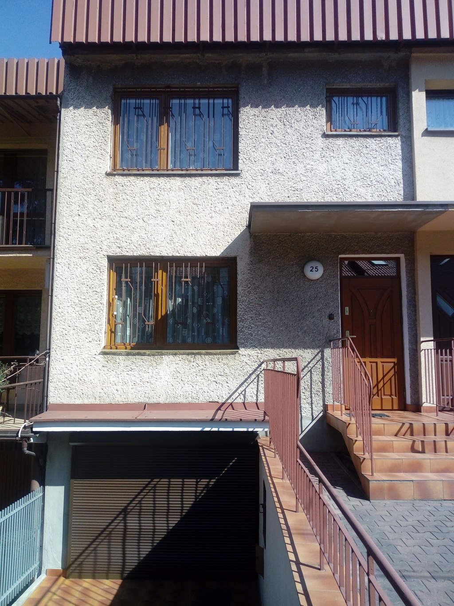
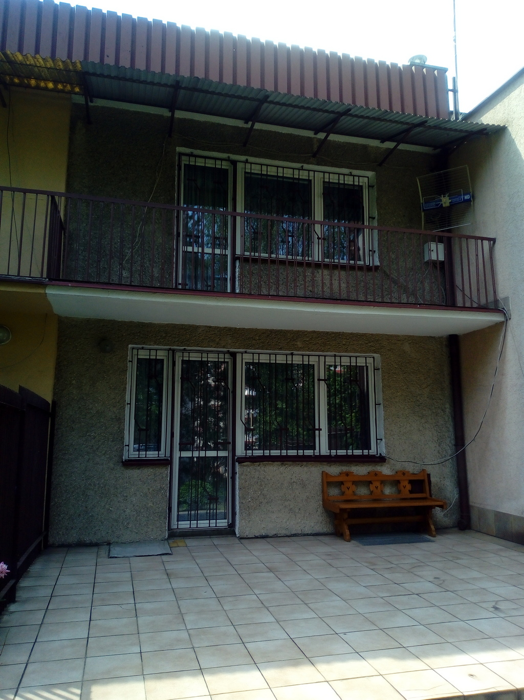
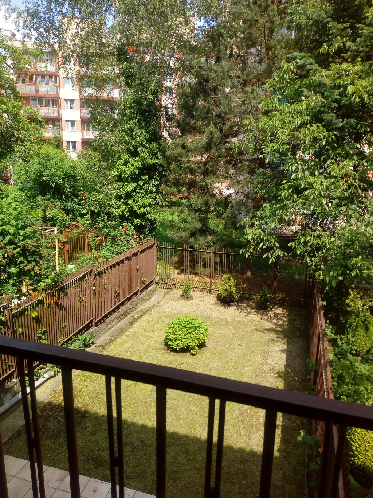
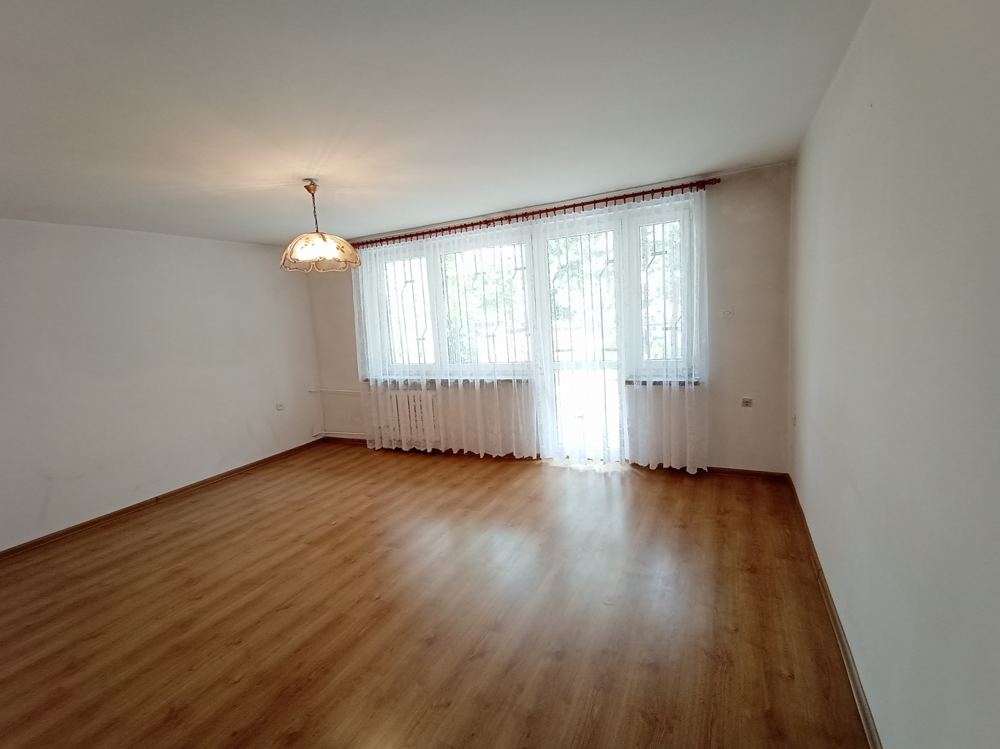
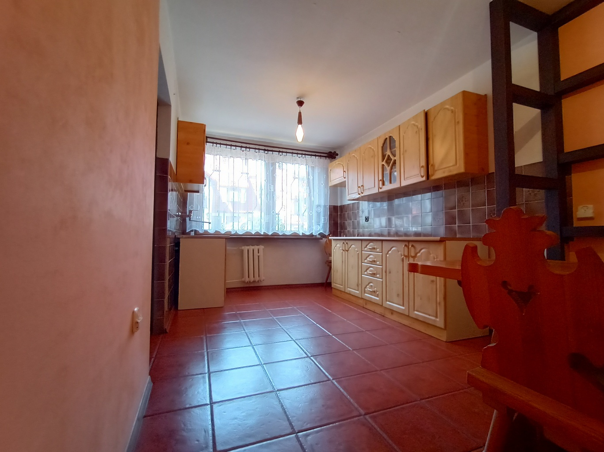
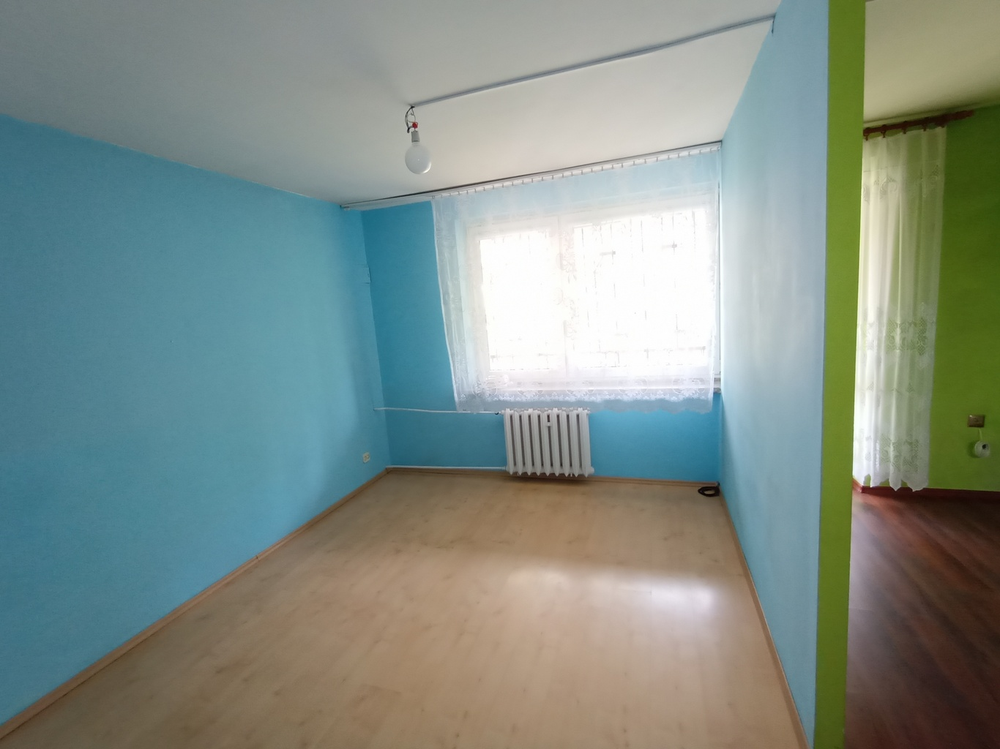
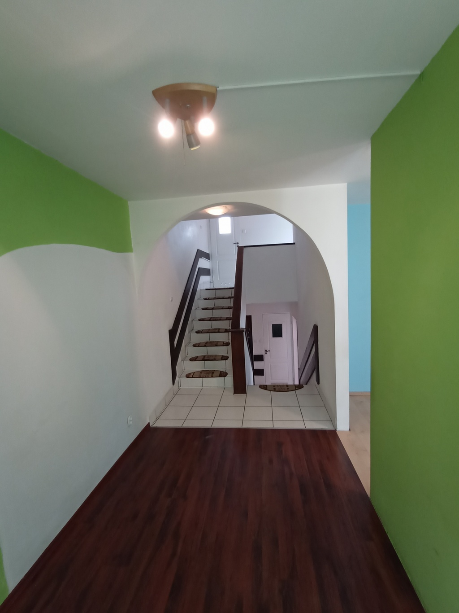
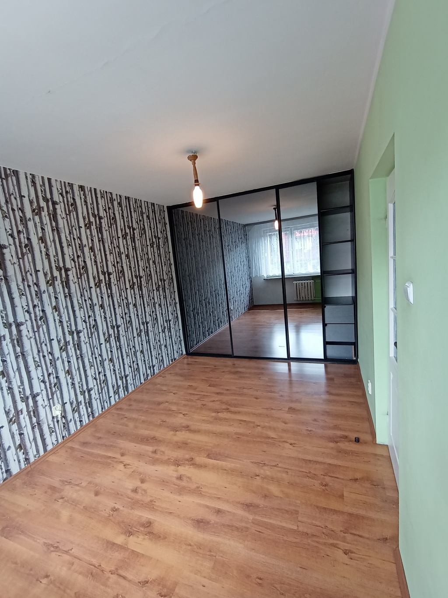

Zamienię dom szeregowy w Podgórzu na mieszkanie + dopłata
Zamienię bezpośrednio dom w zabudowie szeregowej o powierzchni 87,5m2 z roku 1987 (segment środkowy), ogrodzony, na działce 164m2, położony w Krakowie Podgórzu, w okolicy ul. Wielickiej i dworca PKP Płaszów (ul. Siemomysła).
Spokojna okolica, doskonała komunikacja z centrum i innymi miejscami. W pobliżu przystanki tramwajowe i autobusowe, bardzo dobrze rozwinięta infrastruktura handlowo-usługowa.
Dom piętrowy, poziomowany (poziomy przesunięte o kilka schodów).
Rozkład pomieszczeń na poszczególnych poziomach:
- I poziom: pomieszczenie gospodarcze (12m2), pomieszczenie gospodarcze (5m2)
- II poziom: garaż (pełnił funkcję kuchni) (13,5m2), pralnia (2,5m2)
- III poziom: salon (21m2) z wyjściem na taras
- IV poziom: kuchnia (13,5m2), wiatrołap, WC
- V poziom: pokój (12m2), pokój (7m2) z wyjściem na balkon (był to jeden pokój, tak jak na poziomie III)
- VI poziom: pokój (13,5m2), łazienka (3,5m2)
Ogrzewanie centralne miejskie z MPEC-u (średnio było około 450,-zł/m-c w sezonie grzewczym).
Ciepła woda podgrzewana bojlerem elektrycznym. W kuchni instalacja gazowa.
Dom jest w stanie do generalnego remontu.
Możliwa zamiana na mieszkanie w dobrej lokalizacji, w pobliżu przystanków tramwajowych i autobusowych, sklepów, punktów usługowych itp, nie na obrzeżach miasta. Dla mieszkań powyżej 40m2 wykluczam ostatnie kondygnacje. W mieszkaniu koniecznie musi być centralne ogrzewanie z sieci miejskiej. Stan techniczny mieszkania nie ma znaczenia. Do tego oczekuję dopłaty różnicy między ceną mieszkania a domu. Cena domu to 790000zł.
Telefon: 519 454 333
Adres e-mail: stach32@mailplus.pl
       